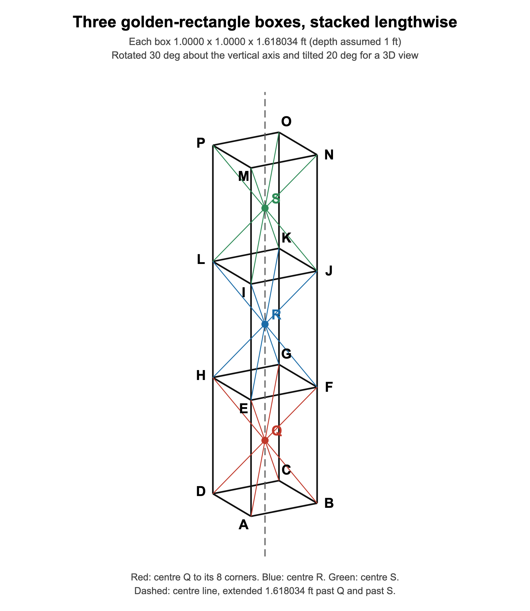

Golden rectangle stack: 3D geometric logo, Word-ready
Three golden-rectangle boxes stacked lengthwise, with all corners labelled A to P, centre points Q, R and S, lines from each centre to its corners, the extended centre line, exact lengths and angles, rotated 30 degrees for a 3D view. Supplied as a Word file, PNG, SVG and PDF so it can be printed in a book.
Please read: this is a first version built from written steps and sketches. The box depth was not stated, so I assumed 1 ft, and I made reasonable readings of "10 angles" and the 30 degree rotation. Those points are listed below and should be confirmed before the final version.

Word file (.docx) · High-resolution PNG · Vector SVG · PDF with tables


Line lengths
| Line | Length |
|---|---|
| Short side of each box (width and depth, assumed) | 1.0000 ft (1 ft 0.000 in) |
| Long side of each box (golden ratio) | 1.6180 ft (1 ft 7.416 in) |
| Centre to corner, each of the 24 lines from Q, R and S | 1.0745 ft (1 ft 0.894 in) |
| Centre to centre, Q-R and R-S | 1.6180 ft (1 ft 7.416 in) |
| Centre line extension past Q, and past S (each) | 1.6180 ft (1 ft 7.416 in) |
| Total centre line (Q-R-S plus both extensions) | 6.4721 ft (6 ft 5.666 in) |
| Overall height of the three stacked boxes | 4.8541 ft (4 ft 10.249 in) |
Angles around the middle centre point R
8 corner rays plus 2 centre-line rays make 10 rays (45 pairs). The distinct angles:
| Angle | Where it occurs |
|---|---|
| 41.1545° | Axis up to each upper corner ray (4); axis down to each lower corner ray (4) |
| 55.4646° | Between neighbouring upper corner rays (4); neighbouring lower corner rays (4) |
| 82.3090° | Between opposite upper corner rays (2); opposite lower corner rays (2) |
| 97.6910° | Upper corner ray to the lower corner ray directly below it (4) |
| 124.5354° | Upper corner ray to a neighbouring lower corner ray (8) |
| 138.8455° | Axis up to each lower ray (4); axis down to each upper ray (4) |
| 180.0000° | Opposite rays through R: 4 space diagonals, and axis up to axis down (5 pairs) |
Assumptions to confirm
- Each box is 1.0000 x 1.0000 x 1.618034 ft. The depth was not stated, so 1 ft is used; a different depth changes the lengths and angles.
- Boxes are stacked end to end along the long side.
- The centre line is extended by one centre-to-centre distance (1.618034 ft) past the top and bottom centres.
- The 30 degree rotation is about the vertical axis, with an added 20 degree tilt so the depth shows.
- "10 angles" is read as all distinct angles among the 10 rays at the middle centre point.